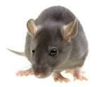

We are offering following services :-
Termite Control
Termites are insects that consume wood and all other materials that contain cellulose. Although some structures are more prone to termite attacks, every building is susceptible to a potential termite invasion. Termites are considered amongst the most destructive pests in the world.Termites can destroy home foundations, support beams, plastic pipes,insulation and more, resulting into heavy economical losses.
Treatment Features :
- We use new Generation odor free, not repellent insecticide that kills the termites
- Basic clean up after treatment is included in our service.
- Pre-Construction and Post-Construction service against Subterranean (ground nesting) termites
- Consultancy for Anti-Termite Structural Design in pre-construction treatment
- Waranty Period- Post Construction :upto 5* years and Pre- Construction: upto 10** years * **Terms and conditions apply
Service Offer :
Post Construcition
- For Home 1-year contract with initial treatment and regular check-up; repeat treatment if necessary without any charge within the contract period.
- 2-year contract also available – please contact for details.
- If entire building is treated, a 5 Year Service Warranty* is provided.
Pre Construction
- 10 Year Service Waranty** from the date of Treatment. Pre Construction Treatment carried out during construction stage as per BIS Standard.
Rodent Control
Rodents may cause serius damage to your residencial and commercial property. They may damage stored grains, furniture, toys, plastic items, cloths, foundation of building. Even they may damage insulation of electric wire, that may create serious fire hazard.
Their droppings, urine and hair may contaminate the surroundings and and pose a serious health hazard including: Plague, Leptospirosis, Sallmonellosis, Murine typhus, Rat bite fever.
Treatment features:
- Our Trained technicians will inspect the affected areas.
- We use safe, non-toxic and eco-friendly glue-based rat and mouse trap and RTU Wax Block Bait.
- Suggestions on prevention of re-infestation are also given.
- Consultation services for making your building Rodent Proof.
Service Offer
- Annual Service Contract for Residencial and Commercial Premises which consists of treatment and regular check-ups to ensure better control of rodents.
- Products for personal use can also be purchased from us.
Cockroach, Ant and Silverfish Control
Most common household pests in India are Cockroaches, Ants and Silverfish. Cockroaches are attracted to all types of food available in your Home, Office and Restaurants. They will eat anything from foods, paper, packaging, plastics and fabrics to animal matter. There are several health hazard associated with cockroaches.
Cockroaches are proven or suspected carriers of the organisms causing: Diarrhoea, Dysentery, Cholera, Leprosy and Typhoid fever etc.In addition they carry the eggs of parasitic worms and may cause allergic reactions, including dermatitis, itching, swelling of the eyelids and more serious respiratory conditions including Asthama.
Treatment features:
- Odor Free and Convenient
- Protection against Cockroaches, Ants and Silverfish
Service Offer
- Annual Contract consisting of 3 treatments
- One-Time treatment, can be converted to Annual Contract with additional charge
Bed Bug Control
Bed bugs infestation seems to be troublesome among household pests. Due to their body structure, they can hide anywhere and remain undetected untill they bite you. Bed bugs feed on blood of human and pets. This may cause serious skin irritation and itching.
Treatment features
- Our trained technician can perform Bedbug treatment effectively. Our skilled and experienced professionals can assess the quantum of infestation, monitor activities and offer the best remedy for effective bed bug control.